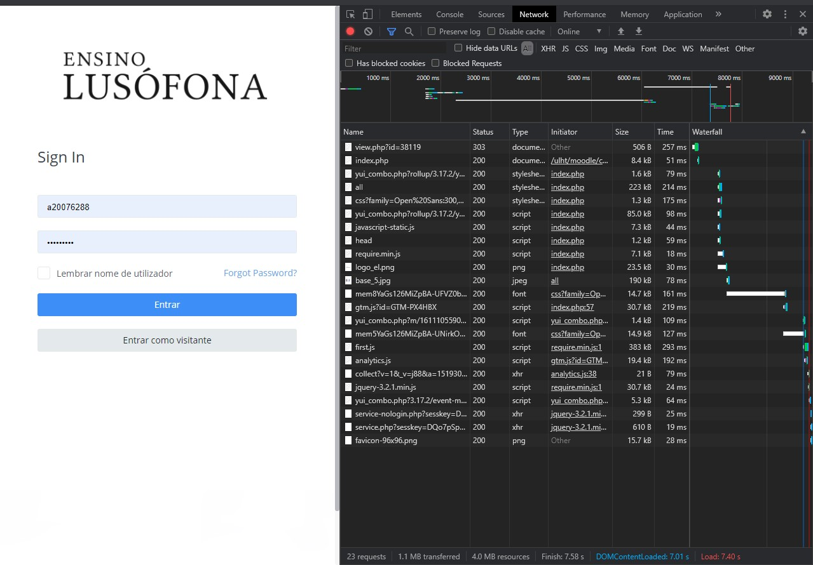
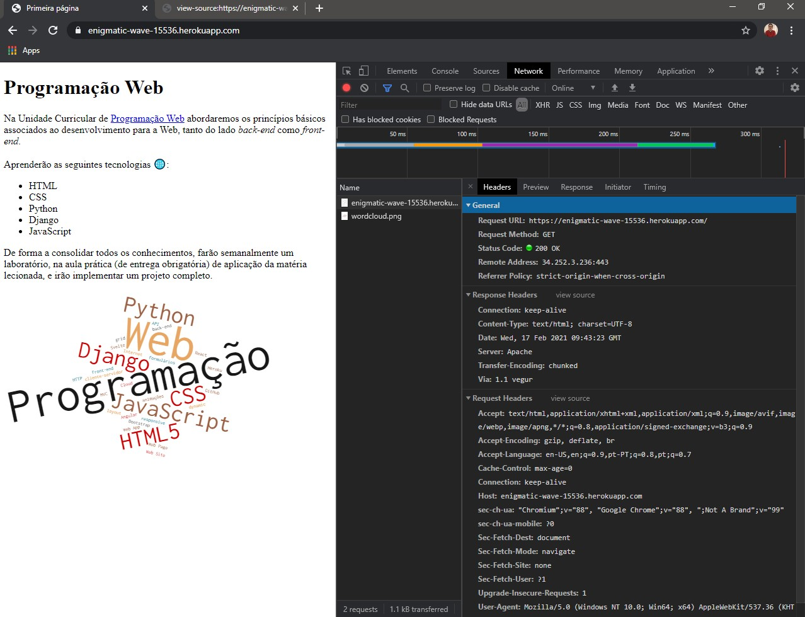

Web Report
Informação sobre o ip do meu PC
Informação sobre o ip do meu site alojado no Heroku
Traceroute do meu site através da linha de comandos
GeoTraceroute para visualizar por onde passam os pacotes ip até chegar ao servidor do meu site
- Inspecionar os conteúdos da minha página no Heroku
Quando entramos no site são descarregados os seguintes ficheiros:
Quando carregamos no hiperlink do moodle da lusófona são descarregados os seguintes ficheiros:

Preview do documento "index.html" da minha página
Headers do documento "index.html" da minha página

Timing do documento "index.html" da minha página
Preview da imagem "wordcloud.png" da minha página
Headers da imagem "wordcloud.png" da minha página
Timing da imagem "wordcloud.png" da minha página